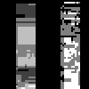

Atomic operations with Atomix.jl
In case the different kernels access the same memory locations, race conditions can occur. KernelAbstractions uses Atomix.jl to provide access to atomic memory operations.
Race conditions
The following example demonstrates a common race condition:
using CUDA, KernelAbstractions, Atomix
using ImageShow, ImageIO
function index_fun(arr; backend=get_backend(arr))
out = similar(arr)
fill!(out, 0)
kernel! = my_kernel!(backend)
kernel!(out, arr, ndrange=(size(arr, 1), size(arr, 2)))
return out
end
@kernel function my_kernel!(out, arr)
i, j = @index(Global, NTuple)
for k in 1:size(out, 1)
out[k, i] += arr[i, j]
end
end
img = zeros(Float32, (50, 50));
img[10:20, 10:20] .= 1;
img[35:45, 35:45] .= 2;
out = Array(index_fun(CuArray(img)));
simshow(out)In principle, this kernel should just smears the values of the pixels along the first dimension.
However, the different out[k, i] are accessed from multiple work-items and thus memory races can occur. We need to ensure that the accumulate += occurs atomically.
The resulting image has artifacts.

Fix with Atomix.jl
To fix this we need to mark the critical accesses with an Atomix.@atomic
function index_fun_fixed(arr; backend=get_backend(arr))
out = similar(arr)
fill!(out, 0)
kernel! = my_kernel_fixed!(backend)
kernel!(out, arr, ndrange=(size(arr, 1), size(arr, 2)))
return out
end
@kernel function my_kernel_fixed!(out, arr)
i, j = @index(Global, NTuple)
for k in 1:size(out, 1)
Atomix.@atomic out[k, i] += arr[i, j]
end
end
out_fixed = Array(index_fun_fixed(CuArray(img)));
simshow(out_fixed)This image is free of artifacts.